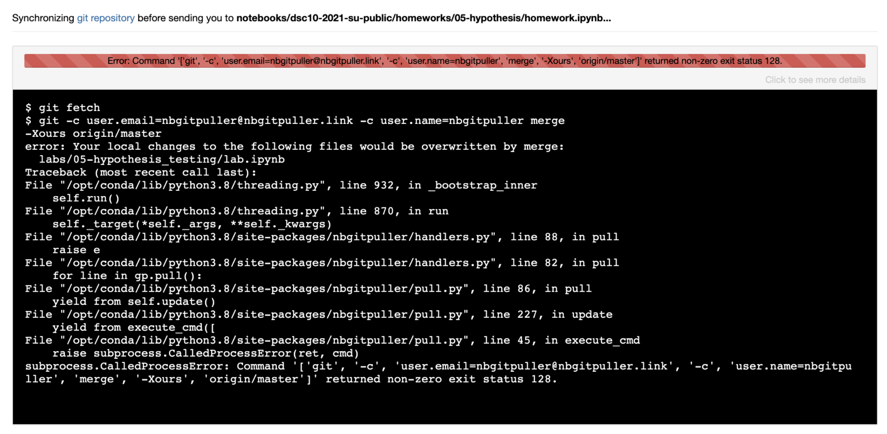

This page gathers some of the most common errors you might see when working on assignments in Jupyter Notebooks. If you're unable to find your problem here or you're still having trouble after trying the recommended fix, you can get help by posting on our Campuswire.
grader.check_all() fails, but all previous tests passed.This can happen if you "overwrite" a variable that is used in a question. For
instance, if Question 1 asks you to store your answer in a variable named foo,
and later on in the notebook you change the value of foo, you'll see the test
after Question 1 pass, but the test at the end of the notebook fail.
Fix: rename later instances of that variable so you're not overwriting it.
This can happen if you're running your notebook's cells out-of-order. The autograder runs your notebook top-to-bottom. If you're defining a variable at the bottom of your notebook and using it at the top, the Gradescope autograder will fail because it doesn't recognize the variable when it encounters it.
This is why we recommend running Kernel -> Restart and Run All: it "forgets" all of the variables and runs the notebook from top-to-bottom, just like the Gradescope autograder will. It will highlight any issues.
Fix: Run Kernel -> Restart and Run All, then find the first cell that raises an error. Make sure that all of the variables used in that cell have been defined above that cell, and not below.
grader is not defined.If it has been a while since you've worked on an assignment, the kernel will
shut itself down to preserve memory. When this happens, all of your variables
are forgotten, including the grader. That's OK: you'll just need to re-run all
of the cells.
Fix: Re-run all of the cells you've completed so far. The easy way to do this is by using Kernel -> Restart and Run All.
isinstance(..., numbers.Integral).This error is telling you that the answer should be an integer, but your answer is not. This often happens when you've done some intermediate work towards the answer and saved an intermediate result in the answer variable instead of the final result.
Sometimes instead of isinstance(..., numbers.Integral), you'll see something
like isinstance(..., bpd.DataFrame). This is saying that the answer should be
a DataFrame, but yours was something else. The rest of the above still applies.
Fix: check the type of your answer variable with type(). Is it what you
expected?
While you might see the correct answer displayed as the result of the cell, chances are it isn't being stored in the answer variable.
Fix: Make sure you are assigning the result to the answer variable. Make sure there are no typos in the variable name.
It isn't rare for Datahub to have availability issues, especially early in the quarter. Usually it is back up and running again within an hour. In other instances, there are some things you can do to get the notebook running again:
Fixes:
If one particular cell seems to cause your kernel to die, your code is probably incorrect in a way that is causing the computer to use more memory than it has available. For instance: your code is trying to create a gigantic array. To prevent from crashing the entire server, the kernel will "die".
Fix: find the part of your code that is trying to create such a large object and fix it.
In rare instances, clicking on an assignment link on the course page may result in an error like the one shown in the image below.

Warning! There are several errors that look similar to the image above, but before proceeding carefully read the error message to ensure that it contains the phrase "Your local changes to the following files would be overwritten by merge". If this is not present in the error message, contact us on Campuswire with a screenshot.
If you do see the above phrase, continue with the steps below.
Go directly to datahub.ucsd.edu in a browser and log in (if you are not
logged in already). You should be taken to a "File Manager" view which lists
the folders available in your account. If DSC 10 is the only class you have
taken that uses DataHub, you'll likely see only one folder:
dsc10-2021-su-public/.
On the upper right of the page, click the dropdown menu that says "New" and select "Terminal".
In the terminal, type the following command, then hit the enter key to run it.
cd dsc10-2021-su-public
The command will not display anything.
Still in the terminal, type the following command and hit enter to run it:
git stash
You should see some output.
Now go back to dsc10.com and click the link to the assignment you were attempting to work on. It should now load without error. If you still see an error, make a post on Campuswire with a screenshot of the error you see now.